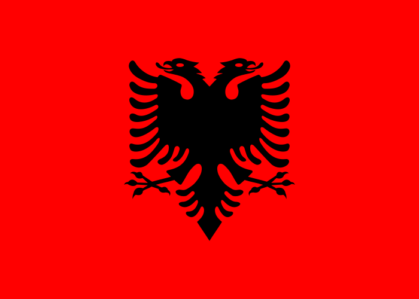

Countries
국가
동유럽 20개국의 국가 정보와 소식을 권역별로 살펴보세요.
V4 (비셰그라드 4개국)
Visegrád Group4개국


발트 3국
Baltic States3개국


서발칸
West Balkans4개국


남발칸
South Balkans5개국 몬테네그로Montenegro
상세 보기
11월 1주차 뉴스EU 집행위 확대 패키지 채택…몬테네그로 등 선두 후보국에 가입 로드맵 제시 · European Western Balkans
몬테네그로Montenegro
상세 보기
11월 1주차 뉴스EU 집행위 확대 패키지 채택…몬테네그로 등 선두 후보국에 가입 로드맵 제시 · European Western Balkans 코소보Kosovo
상세 보기
11월 1주차 뉴스이번 주 확인된 주요 보도 없음
코소보Kosovo
상세 보기
11월 1주차 뉴스이번 주 확인된 주요 보도 없음
알바니아Albania 상세 보기 11월 1주차 뉴스EU 집행위, 확대 패키지서 알바니아에 가입 로드맵 제시 · European Western Balkans 북마케도니아North Macedonia
상세 보기
11월 1주차 뉴스불가리아·북마케도니아 역사·교육 공동위원회, 성과 없이 종료 · BTA
북마케도니아North Macedonia
상세 보기
11월 1주차 뉴스불가리아·북마케도니아 역사·교육 공동위원회, 성과 없이 종료 · BTA 불가리아Bulgaria
상세 보기
11월 1주차 뉴스불가리아 대선 결선서 요토바 현 대통령 승리 · Reuters (The Star)
불가리아Bulgaria
상세 보기
11월 1주차 뉴스불가리아 대선 결선서 요토바 현 대통령 승리 · Reuters (The Star)
동부권
Eastern Europe4개국


Reports & data
국가별 대표 보고서·자료
- KOTRA 해외시장뉴스 – 국가·지역정보KOTRA 무역관이 정리한 국가별 경제·무역·투자 정보
- KOTRA 해외시장뉴스 – 진출전략국가별 시장 진출전략 보고서
- KOTRA 해외시장뉴스 – 국별 주요산업국가별 주요 산업 분석
나라를 골라 KOTRA·외교부·세계은행·IMF·현지 공식 기관의 자료로 바로 이동하세요.